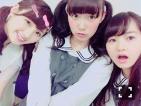

| 2015/12 14 Mon | ひめたん-0o0-その596 |
手短に！告知させてください！
次回のらじらー！サンデーは
クリスマスライブ中の武道館とスタジオとを
中継することが決定しました！
夏の神宮の時みたいな感じです
藤森さんが武道館から、
中田さんがスタジオからお送りします！
そして終演後、私と一緒に
スタジオに駆けつけてくれるゲストは
伊藤万理華ちゃん、井上小百合ちゃんです！
きたー！温泉トリオ！！(・∀・)
クリスマスといえば
この3人ということでまたも
ふたりを巻き込むことにしました(・∀・)
ええい！
面倒くせえ女こと中元がとうとう
番組に私情を持ち込んできたぞ！ふはは！！

さゆちゃんは2回目、万理華は初登場。
メールテーマは「第2回 乃木坂女子会」
みなさんからのお題を元に
3人で女子会するので
何か話し合ってほしいこと送ってください
第1回の中3組回を通してわかったのは
らじらーにしては珍しい
ゆっっっっるい時間が流れるということ。
今回もマイペースな3人なので
一体どうなることやら(´｡•ω•｡`)
「乃木坂流行語大賞」もよろしくね！
二人への応援メッセージお待ちしてます～
さゆちゃんへのお誕生日メッセージなんかも
ここなら本人に届くかも(小声)
おたよりの宛先はこちら。
ライブ行かないよ～という方は
是非ラジオを通して
会場の雰囲気を味わっていただきたいし
ライブ行くよ～という方は、あれです、
公演終わったら即刻
ラジオつけてください。笑
生放送でこんなこと
なかなかできないですよー？
お楽しみに(´｡•ω•｡`)
声優アーツには大坪由佳さんが
来てくださいますよ。
あ、来週サタデーのゲスト
オリラジさんなんですね！土日両日！
こちらも是非！
いえーいそろそろ写真がなくなってきたぜ！
レッスン着風の写真があるぜ！
サンエト初グラビアの時のだぜ！

ソニレコ12月2週目分
更新されました～！
新OPテーマが形になってきたよ(^o^)
3人で歌ってるので
スタジオの様子観てみてください。
お当番は笑楽こと相楽伊織ちゃん～♪
ソニレコの収録毎回楽しみなんだ(^o^)
チャンネル登録はこちらから。
10日は乃木坂浪漫のイベントでした～
来てくださった方ありがとう( ´ ▽ ` )
楽しかったなあ朗読会。
最近半身浴しながら
読書するのがすきなんだけど
美彩先輩のオススメしてた本が気になるから
今度読んでみようかな～
～お知らせ～
12/7 トップエール
12/18 乃木坂46物語
12/19 OVERTURE No.005
12/22 GiRL POP 2016 WINTER
12/23 ALL MV COLLECTION
12/25 FLASHスペシャル
1/6 デリシャスミュージック
12/23発売のMV集に収録されている
「悲しみの忘れ方」は
allメンバー出演させていただいてます！
37名全員のMVは
この作品が初めてになるのかな？
是非観てください( ˇωˇ )

はね～

 これから寒くなりますが
これから寒くなりますが
ひめたんは冬好きですか？
冬は好きじゃないです( ´ ･ω･ ` )
でも夏も好きじゃないです( ´ ･ω･ ` )
そういえばひめたん
スラムダンクどこまで読んだ？
あれ、言ってなかったっけ？
読破しました！
ラストシーン感動したぁぁああ（ ; ; ）
来期のアニメ一覧出てるけど
あーもうそんな季節なんですね。
全然情報入れてなかったー！
暗殺教室とおそ松さんは楽しみにしてますよ
あと何観たらいーい？？
ひめたんの歴代のアニメの中で最も
ひめたんの歴代のアニメの中で最も
好きなキャラクターは誰？？
好きなキャラクターはたくさんいるけれど
絶チルの紫穂ちゃんと兵部さんは
いっちばん最初に好きになったキャラなので
ずっと特別ですかね。
あ、ライブの前に
また更新できちゃったから
もいっかい言っておこーっと♪笑
ひめたんのサイリウムカラーは
ぴんく
×
ぴんく
ですよ～
コールは＼ひめたーん／♡
あ、それから
かりんちゃんのブログみたよ
ありがとうー＼(^o^)／
実はひめも自分の日たまたま
マネージャーさんと渋谷駅通ったので
パネルのとこ寄り道して写真撮りました、が
恥ずかしいので
ここには載せない＼(^o^)／笑
思い出フォルダに残しておきます。

さゆちゃん、今野さん
お誕生日おめでとうございます＼(^o^)／
一年前の今日は有明コロシアムで
サプライズで会場中みんなで歌ったの
懐かしいな～♪
(＊´・ω・＊)
コメント(937)
2015/12/14 00:00